Esta página presenta qué son R y RStudio, cómo instalarlos y cómo pedir ayuda.
R es un lenguaje y entorno para la computación estadística y la generación de gráficos. Se utiliza para manipular datos, ajustar modelos estadísticos y producir gráficos de calidad para publicación.
Software libre y gratuito: se distribuye bajo la Licencia Pública General de GNU (GNU GPL).
Multiplataforma: funciona en Windows, macOS, Linux y otros sistemas de tipo UNIX, como FreeBSD.
Popularidad en ciencia de datos: en mayo de 2026 alcanzó el puesto 8 del índice TIOBE, su mejor posición histórica.
Origen: fue creado por los estadísticos Ross Ihaka y Robert Gentleman en la Universidad de Auckland (Nueva Zelanda) para enseñar estadística introductoria. Su primera versión pública se difundió en agosto de 1993 y el diseño del lenguaje se publicó en Ihaka y Gentleman (1996).
Relación con S: es una implementación diferente del lenguaje S, desarrollado en Bell Laboratories por John Chambers y sus colegas.
Lenguaje multiparadigma: admite programación funcional, orientada a objetos, procedimental e imperativa, entre otros estilos.
Implementación: está escrito principalmente en C, Fortran y el propio R. Para tareas de alto costo computacional permite enlazar código en C, C++ y Fortran.
Comunidad muy activa: su desarrollo se apoya en el R Core Team, la R Foundation y el R Consortium, y cuenta con espacios como useR!, R-Ladies y The R Journal.
Versión actual: R 4.6.2 (“Diversified Portfolio”), publicada el 29 de octubre de 2026.
Gran cantidad de paquetes: CRAN ofrece más de 25 000 y Bioconductor 3.23, 2418 paquetes de software. Otros se alojan en GitHub, en especial durante su desarrollo.
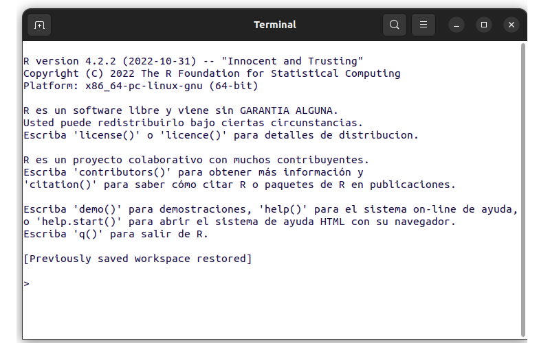
Ventana de la terminal de R
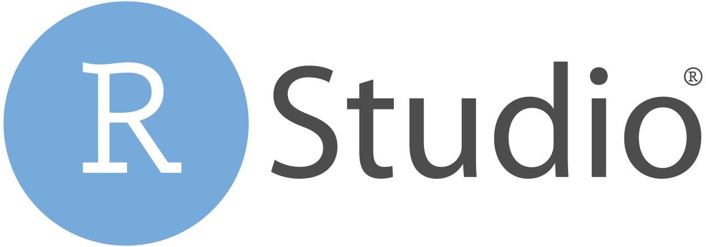
RStudio es un entorno de desarrollo integrado (IDE) creado por Posit, empresa antes llamada RStudio, que reúne en una sola interfaz las herramientas para trabajar con R. La edición de escritorio es software de código abierto con licencia AGPL v3 y su versión actual es la 2026.10.1.
Su interfaz tiene cuatro paneles principales y una barra lateral opcional. En la siguiente figura se identifican sus componentes:
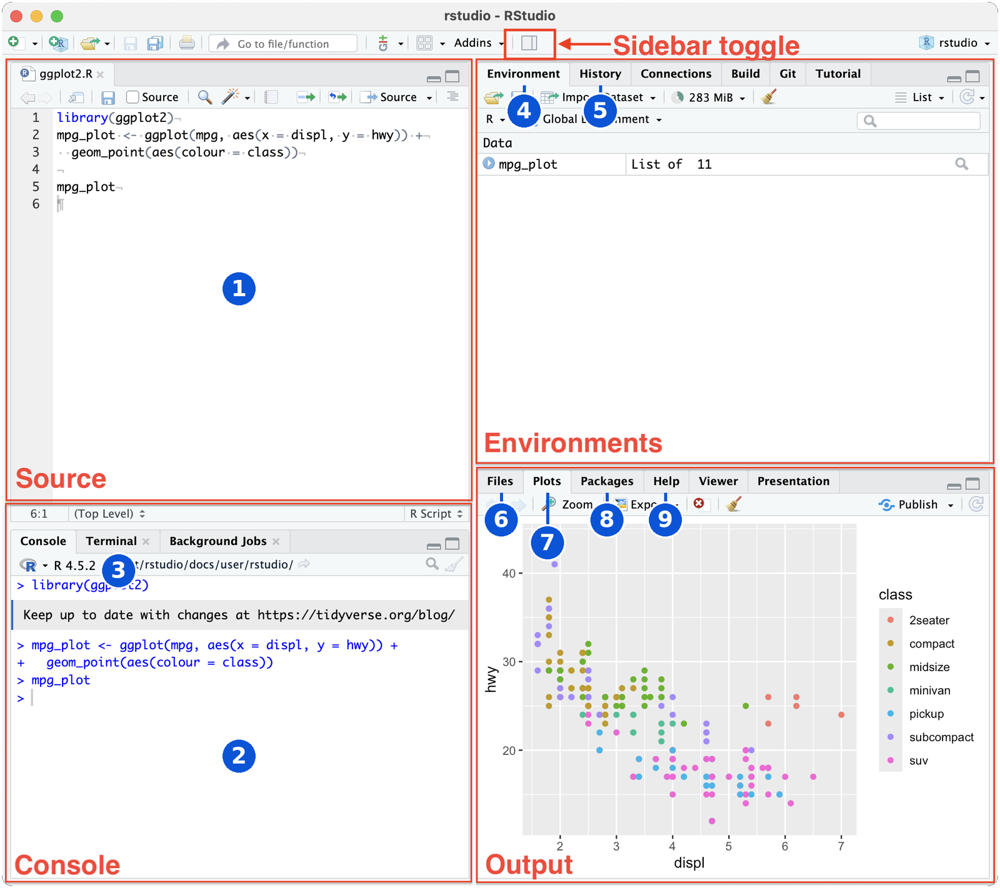
Paneles de RStudio. Fuente: adaptada de Posit, RStudio User Guide
Fuente (Source): panel donde se editan y guardan scripts y otros archivos, como .R, .Rmd, .qmd, .py, .txt o .md.
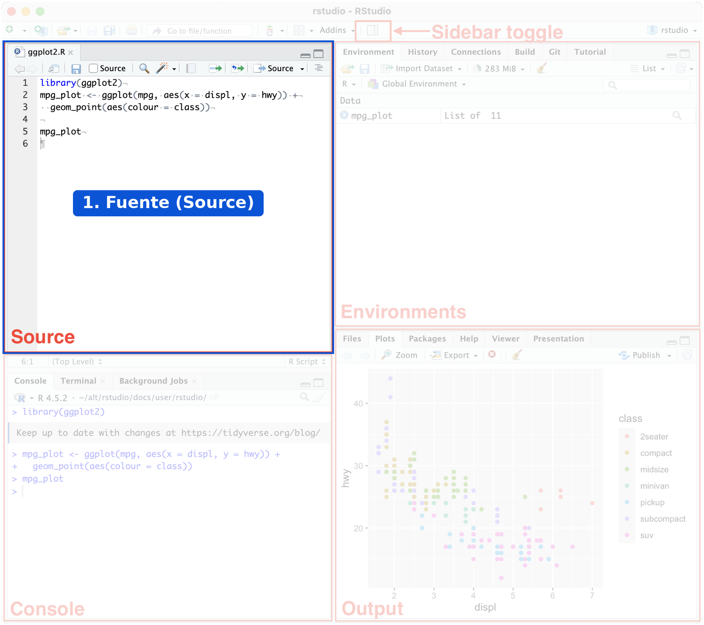
Ubicación del panel Fuente (Source)
Consola (Console): panel donde se ejecuta código
de forma interactiva. Por defecto usa R y, con el paquete
reticulate, que conecta R con Python,
también puede usar ese lenguaje.
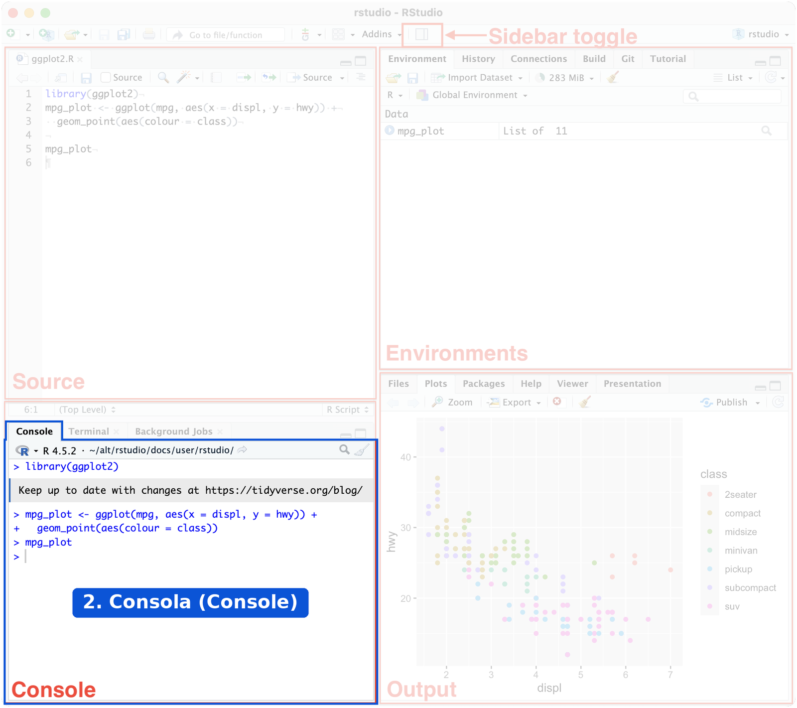
Ubicación del panel Consola (Console)
Terminal: pestaña del panel de consola para ejecutar comandos del sistema, entre ellos los de Git.
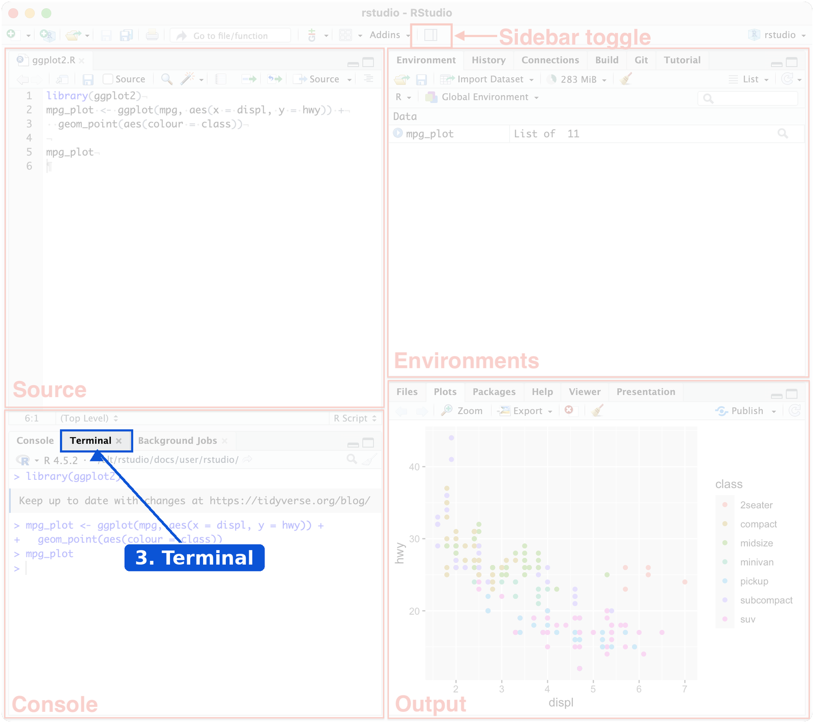
Ubicación de la pestaña Terminal
Ambiente (Environment): pestaña que muestra los objetos creados en la sesión y permite importar conjuntos de datos.
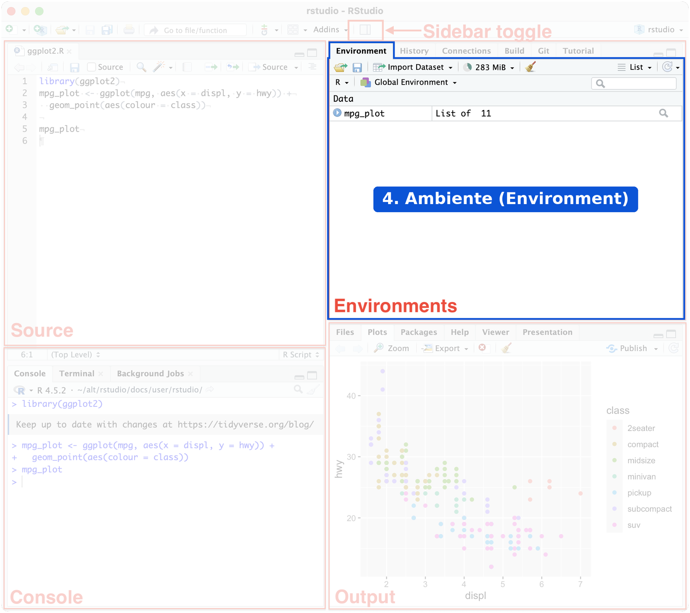
Ubicación de la pestaña Ambiente (Environment)
Historial (History): pestaña que registra los comandos ejecutados en la sesión.
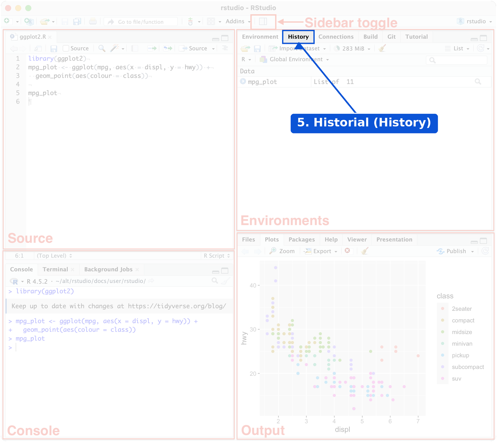
Ubicación de la pestaña Historial (History)
Archivos (Files): pestaña para explorar el proyecto y los directorios, y para crear, renombrar o eliminar archivos.
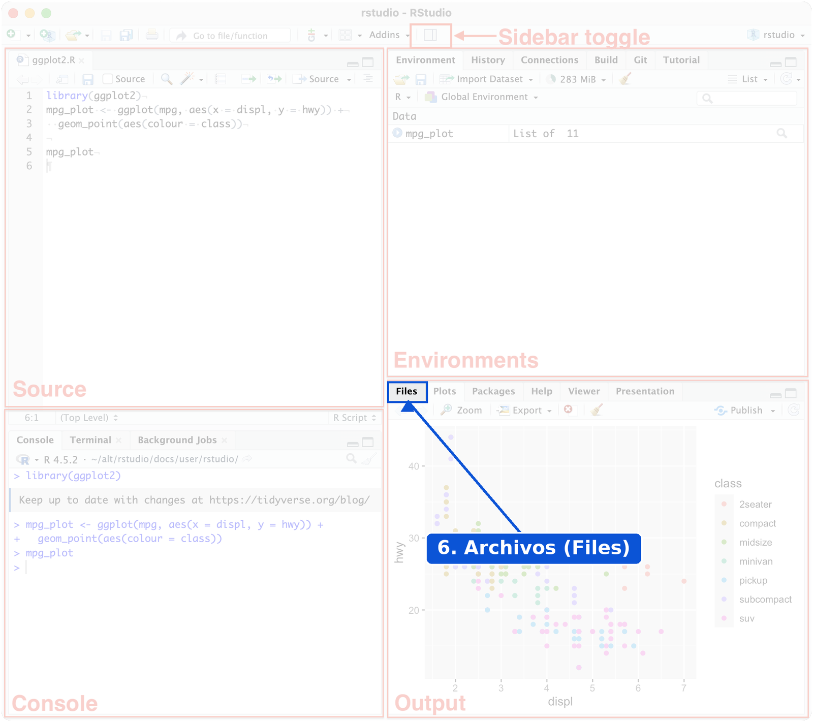
Ubicación de la pestaña Archivos (Files)
Gráficos (Plots): pestaña que presenta los gráficos generados y permite ampliarlos o exportarlos.
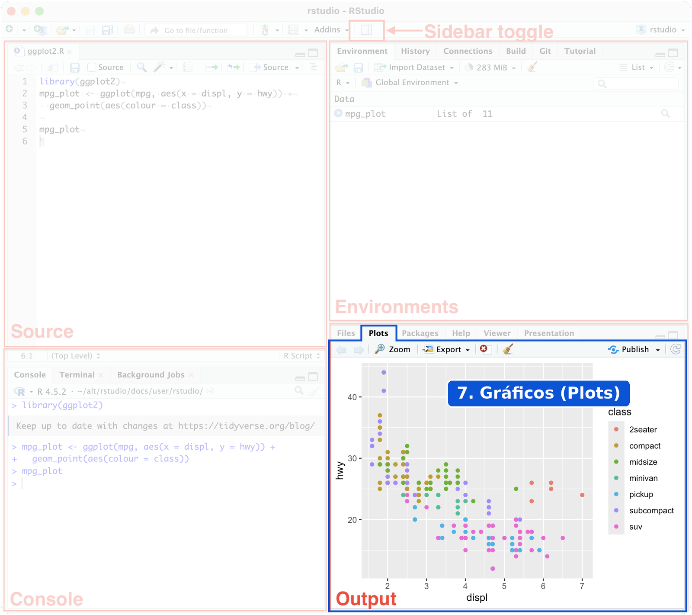
Ubicación de la pestaña Gráficos (Plots)
Paquetes (Packages): pestaña para consultar, instalar y actualizar paquetes.
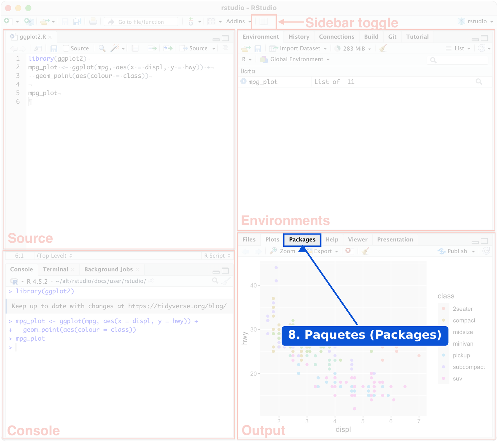
Ubicación de la pestaña Paquetes (Packages)
Ayuda (Help): pestaña que muestra la documentación y las viñetas de los paquetes.
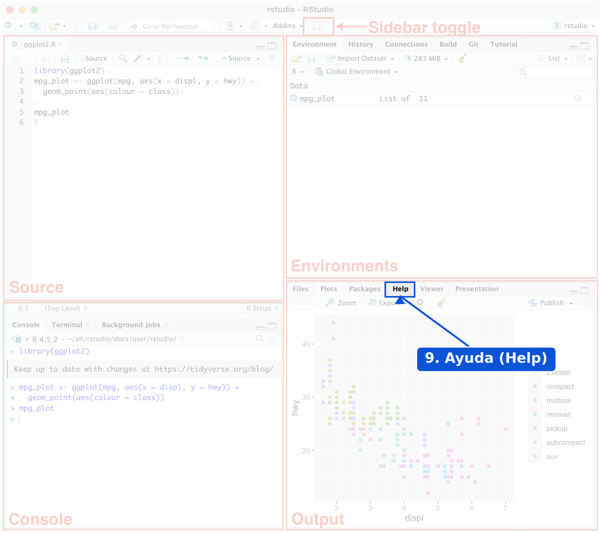
Ubicación de la pestaña Ayuda (Help)
RStudio incluye además las pestañas Background Jobs, Connections, Build, Git, Tutorial, Viewer y Presentation. La disposición de los paneles se puede modificar en Tools > Global Options > Pane Layout.
Primero se instala R y después RStudio, porque RStudio necesita una instalación de R. Los instaladores se descargan desde los siguientes enlaces:
Nota. Según Posit, en Windows no se requiere nada más para ejecutar RStudio. Los siguientes programas son opcionales y dependen del trabajo que se vaya a realizar:
Git: para el control de versiones desde RStudio.
LaTeX: para generar archivos PDF. Se recomienda TinyTeX, aunque también sirven MiKTeX, MacTeX o TeX Live.
Python: para trabajar con este lenguaje desde RStudio.
Desde la versión 2022.07.1, RStudio
permite editar y previsualizar documentos Quarto. Para generar
informes con archivos Rmd se usa el paquete rmarkdown.
TinyTeX se instala con cualquiera de estas dos opciones:
Desde la consola de R:
install.packages("tinytex")
tinytex::install_tinytex()Desde la terminal, si se trabaja con Quarto:
quarto install tinytexR cuenta con un sistema de ayuda que permite revisar la sintaxis y los argumentos de las funciones, además de ejemplos y referencias relacionadas. Se puede acceder desde la pestaña Help (número 9 de la figura de paneles) o desde la consola:
help("lm")?lm| Problema | Causa | Solución |
|---|---|---|
| RStudio no abre o no encuentra R | R no está instalado | Instalar R y abrir RStudio de nuevo |
could not find function "Mean" |
R distingue mayúsculas de minúsculas | Escribir mean() |
unexpected ',' |
Se usó coma como separador decimal | Usar punto: 3.5 |
La consola muestra + y no responde |
La instrucción está incompleta | Completarla o presionar Esc |
No documentation for ... |
El nombre de la función no existe o el paquete no está cargado | Revisar el nombre o usar ??palabra |
Indique en qué panel o pestaña de RStudio se hace cada tarea:
Los objetos se ven en Environment, el script se escribe en Source, los paquetes se instalan en Packages y la documentación se consulta en Help.
Cada línea tiene un error. Corríjala.
Mean(c(1, 2, 3))
x <- 3,5
help(lmmean(c(1, 2, 3)) # R distingue mayúsculas de minúsculas
x <- 3.5 # el separador decimal es el punto
help(lm) # faltaba cerrar el paréntesisEjecute ?mean y averigüe qué hace el argumento
trim. ¿Qué resultado da
mean(c(1, 2, 3, 100), trim = 0.25)? ¿Por qué es tan
distinto de la media sin ese argumento?
trim indica la fracción de observaciones que se elimina
en cada extremo antes de calcular la media. Aquí se quitan el 1 y el
100:
mean(c(1, 2, 3, 100), trim = 0.25)
[1] 2.5
mean(c(1, 2, 3, 100))
[1] 26.5La media sin ese argumento se ve afectada por el valor 100.
Big Book of R: colección de más de 400 libros sobre R, con una sección en español.
R para Ciencia de Datos, 2.ª edición: traducción al español de la edición vigente.
R para Ciencia de Datos, 1.ª edición: traducción colaborativa de la comunidad latinoamericana de R.
Guía de usuario de RStudio: documentación oficial de Posit.
R Core Team. What is R? y R Developer Page.
CRAN. Contributed Packages.
Bioconductor. Release announcements.
Posit. Download RStudio, Pane Layout y Quarto Integration.
Ihaka, R. y Gentleman, R. (1996). R: A Language for Data Analysis and Graphics. Journal of Computational and Graphical Statistics, 5(3), 299-314. https://doi.org/10.1080/10618600.1996.10474713
Xie, Y., Dervieux, C. y Riederer, E. R Markdown Cookbook: Install LaTeX (TinyTeX).
Wikipedia. R (programming language).
Slashdot. Python Stays #1, R Rises in Popularity, Says TIOBE.
Las figuras de los paneles de RStudio se adaptaron de la imagen de Pane Layout, en la guía de usuario de RStudio de Posit.
Última revisión: 4 de noviembre de 2026.